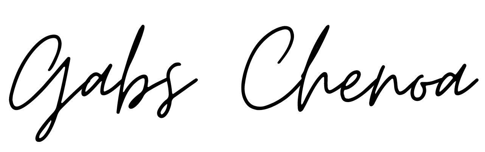
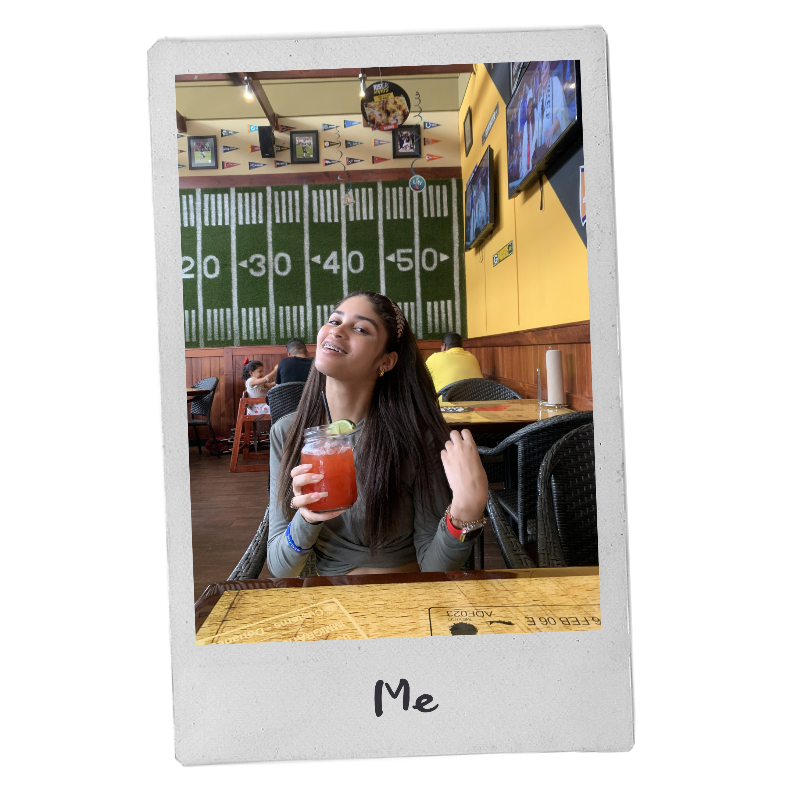
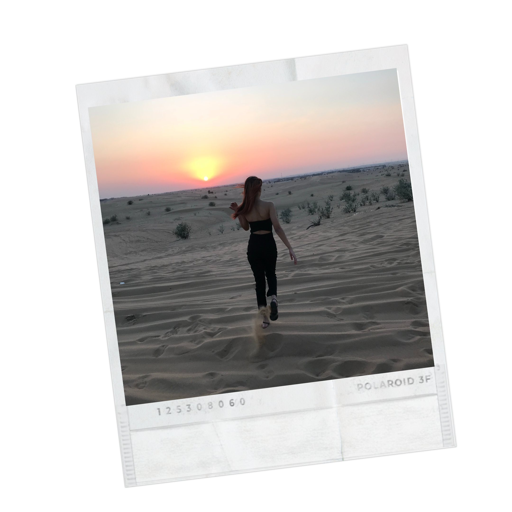
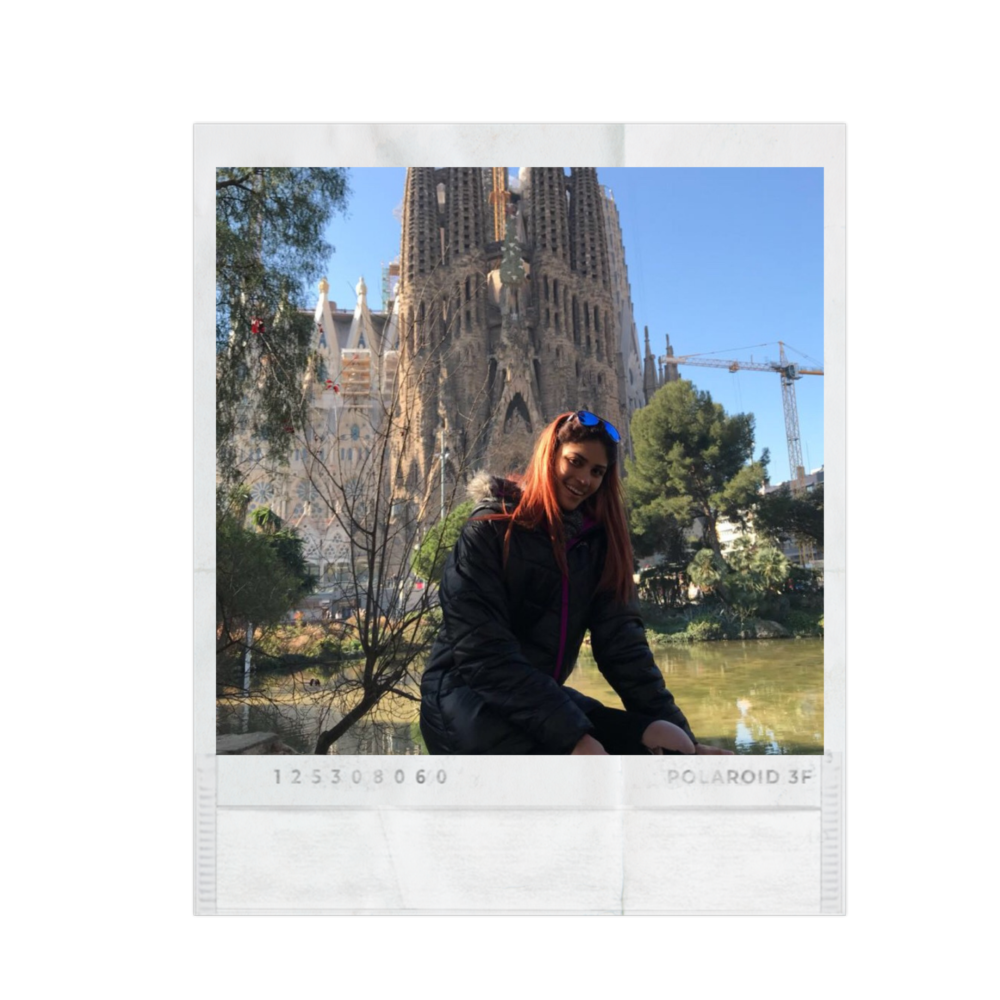
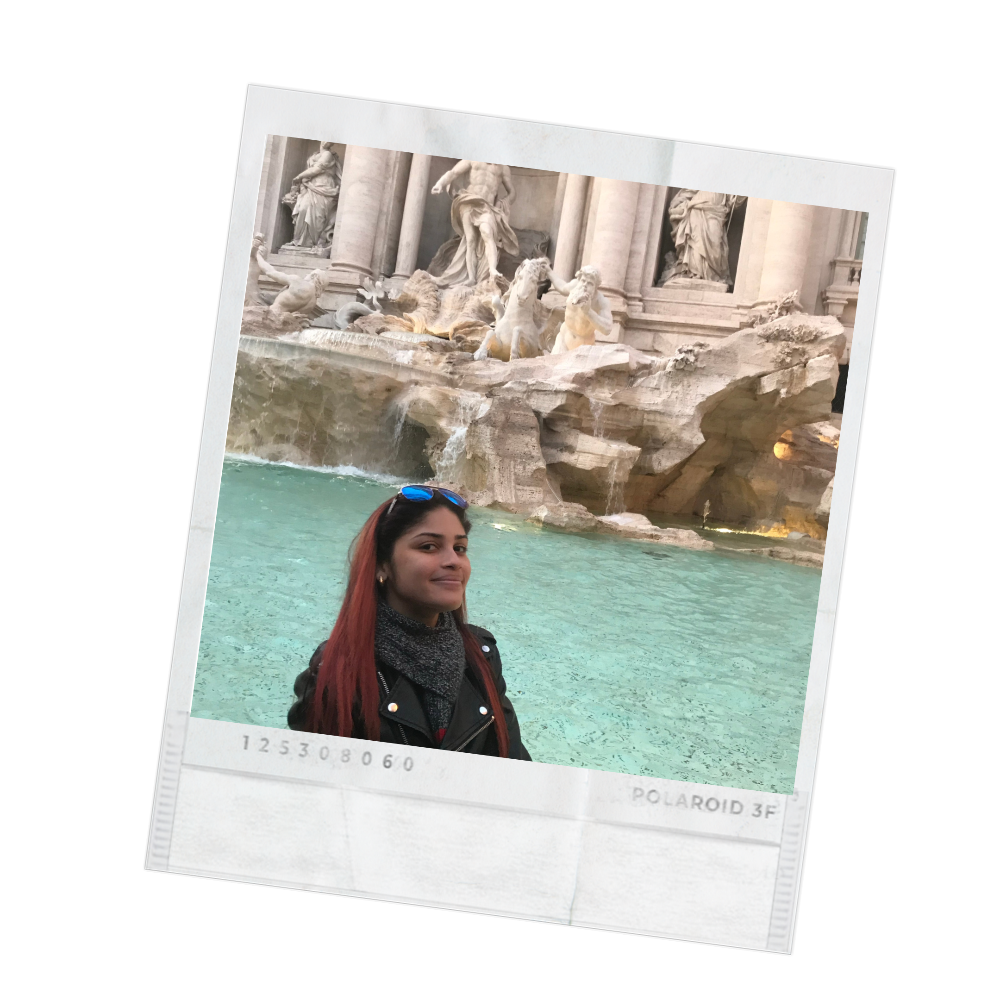
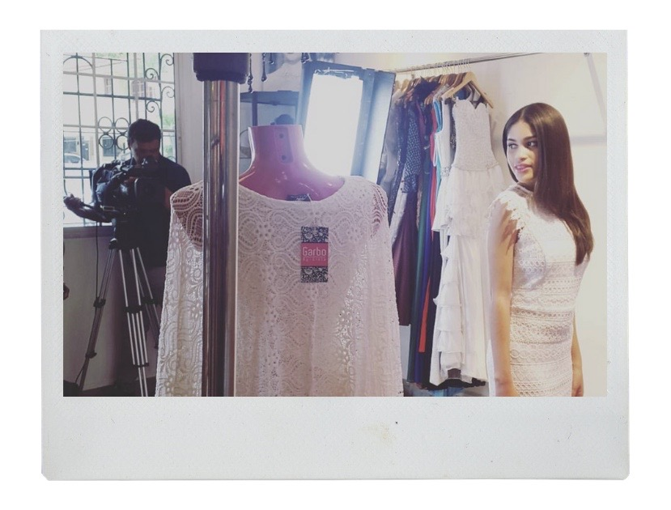

<html lang="en">
    <head>
        <meta charset="UTF-8">
        <meta name="viewport" content="width=device-width, initial-scale=1.0">
        <meta http-equiv="X-UA-Compatible" content="ie=edge">
        <title>Acerca de mí-Gabs Chenoa</title>
        <link rel="stylesheet" href="styles.css">
        <link href="https://fonts.googleapis.com/css2?family=Roboto:wght@300&display=swap" rel="stylesheet">
    </head>
    <body>
        <div class="wrapper">
            <div class="nav">
                <div class="logo">
                    <h4>Gabs Chenoa</h4>
                </div>

                <div class="links">
                    <a href="index.html" class="mainlink">Inicio</a>
                    <a href="Acerca.html">Acerca de mí</a>
                    <a href="Galería.html">Galería</a>
                    <a href="Contacto.html">Contacto</a>
                   
                </div>
            </div>
            <br>
            <br>
            <br>
            <br>
            <br>
            <br>
            <center>
            </center>
            <br>
        <div class="about">
            <div class="aboutme">
                
            </div>
            <div class="aboutList">
                <ol>
                    <li>
                        <span>Sobre mí</span>
                        <p>Mi nombre es Gabriela García, pero de cariño me llaman Gabs, Gaby o Chenoa (mi segundo nombre). Nací en la República de Panamá el 8 de agosto y tengo 18 años. Actualmente, curso el último año en el colegio. </p>
                        <iframe src="https://audiomack.com/embed/song/renegade-music/salt-ava-max?color=f8e71c" scrolling="no" width="90%" height="152" scrollbars="no" frameborder="0"></iframe>
                    </li>
                </ol>
            </div>
        </div>
        <br>
        <br>
        <br>
        <br>
        <br>
<center>
        <h2>Pasatiempos</h2>
        <span style="color: coral;"> <h2>Viajar</h2></span>
       <p> Sin dudas viajar es de mis cosas favoritas. Adoro conocer países con culturas diferentes,<br>
           comidas exóticas, conocer gente de otras regiones, nuevos idiomas, me gusta contemplar la<br>
           arquitectura de las ciudades y visitar los diferentes parques de diversiones. Disfruto <br>
           todo lo que conlleva realizar un viaje, desde escoger el destino, comprar los atuendos <br>
           y armar maletas hasta estar horas en un avión para llegar a un “mundo nuevo para mí. <br>
           De hecho, gracias a un viaje pude conocer a uno de mis artistas favoritos y tomarme <br>
           una foto con él.
<br>
<br>
        De los países que he visitado mis favoritos son Italia, España y Los Emiratos Árabes.
        <br>
        <br>
        Deseo visitar pronto Grecia, Tailandia y México.
                </p>
                <br>
                
        <br>
        <br>
        <span style="color: coral;"> <h2>Ver series y películas</h2></span>
        <p>En mi tiempo libre siempre trato de ver una que otra serie o película. Me gustaba mucho<br>
           ir al cine con mis amigos, tanto que a veces veía con ellos la misma película que ya<br>
           había visto sola. Las películas de drama, misterio y ciencia ficción son mis favoritas. <br>
          Nerve, Contratiempo, Clueless y las películas de Thor son algunas de mis favoritas.<br>
        
        <br>
        <br>
        Me gustan todas las series que tienen que ver con superhéroes y también las de moda, diseño<br>
        y misterio. Entre mis series favoritas están: Arrow, Dark y Gossip Girl.
                </p>
        <br>
        <br>
        <span style="color: coral;"> <h2>Diseñar</h2></span>
        <p>Me gusta hacer sketch en el iPad, me gusta dibujar y pintar. Desde pequeña siempre me<br>
           interesó el diseño gráfico, diseñaba las invitaciones de mis cumpleaños. Se me hace muy<br>
           interesante como un conjunto de elementos, colores y formas que solos no representan <br>
           nada, al ser unidos en una sola pieza, pueden tener un gran significado.
    </p>
        <br>
        <br>
        <span style="color: coral;"> <h2>Escuchar música</h2></span>
        ¿Se puede vivir sin música? Para mí la respuesta es un no rotundo. Escucho música para <br>
        bañarme, peinarme, maquillarme, tomarme fotos, quitarme el estrés, ¡para todo!<br>
<br>
        Entre mis artistas favoritos están: Drake, J Balvin, Bad Bunny, Manuel Turizo, Ariana Grande,<br>
        Camila Cabello, Dua Lipa, Khalid, Ava Max, The Weeknd, Billie Eillish, Harry Styles y Lauv.
        <br>
        <br>
        <iframe src="https://audiomack.com/embed/song/iamoliver-1/hallucinate?color=f465f3" scrolling="no" width="50%" height="50" scrollbars="no" frameborder="0"></iframe>
        <br>
        <iframe src="https://audiomack.com/embed/song/calvinharris/over-now?color=f465f3" scrolling="no" width="50%" height="50" scrollbars="no" frameborder="0"></iframe>
        <br>
        <iframe src="https://audiomack.com/embed/song/itsdamzy/toosie-slide?color=f465f3" scrolling="no" width="50%" height="50" scrollbars="no" frameborder="0"></iframe>
        <br>
        <br>
        Algunas bandas que me gustan son: CNCO, Imagine Dragons, One Republic, Coldplay y Reik.
                <br>
                <br>
                <iframe src="https://audiomack.com/embed/song/derick-giraldo-29/si-me-dices-que-si-acstico?color=f465f3" scrolling="no" width="50%" height="50" scrollbars="no" frameborder="0"></iframe>
    </p>
        <br>
        <br>
        <span style="color: coral;"><h2>Maquillarme</h2></span>
        <p> Soy fanática del maquillaje. Me gusta mucho porque lo consideran una manera de hacer<br>
             arte y permite impulsar mi creatividad.  Mientras me maquillo escucho mi playlist <br>
             favorita para sentirme en ambiente. Quizás no sepa maquillarme tan bien pero poco <br>
             a poco voy aprendiendo.
        </p>
        <br>
        <br>
        <span style="color: coral;"> <h2>Modelar</h2></span>
        <p>Modelar es una de las cosas que más me encantan. Como últimamente no he podido hacer <br>
           trabajos como modelo, yo hago mi propia producción de sesión fotográfica en mi <br>
           habitación. Me maquillo, me peino y escojo mis outfits favoritos.<br>
<br>
<br>
           Una de mis metas es algún día poder ser la embajadora de una marca prestigiosa de ropa.
                </p>
                <br>
                
                <br>
                <br>
                <span style="color: coral;"> <h2>Ir de shopping y salir con mis amigos</h2></span>
       <p>Comprar ropa es un método para desestresarme. Soy apasionada por la moda.<br>
        También me gusta mucho cuando salgo con mis amigos al mall ya que nunca faltan las risas.
                </p>
                <br>
                
    </center>
    <br>
    <br>
    <br>
    <div class="banner">
        <div class="bannerText">
        <h1>"Vayas a donde vayas, ve con todo tu corazón."<br> – Confucio. <br> <span style="font-size: 2vw; font-weight: normal;" class="bannerText">
        </span> </h1>
        </div> 
    </div>
    <br>
    <br>
    <br>
</body>
            </html>